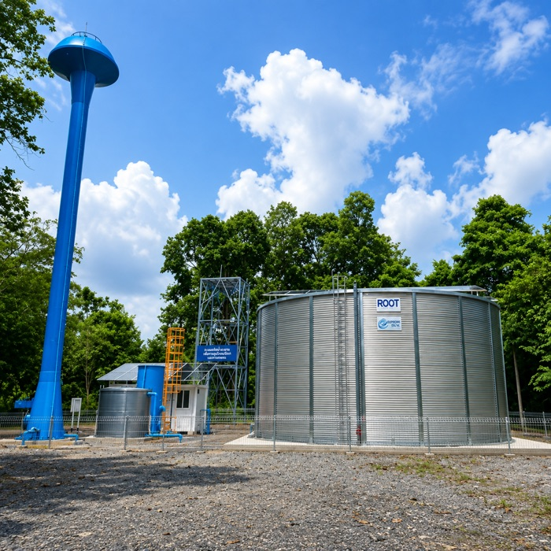
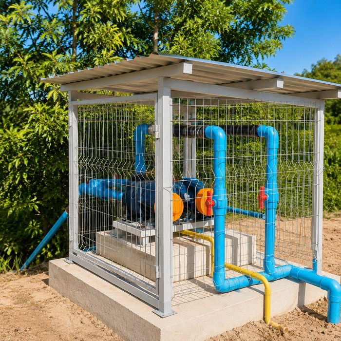
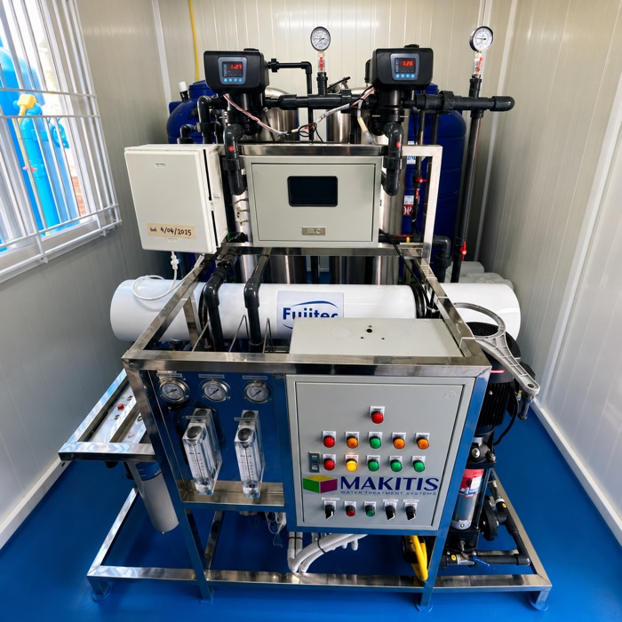
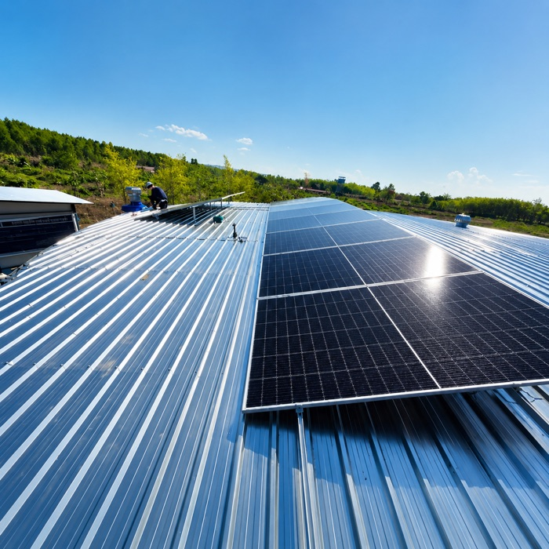

ระบบเก็บและสำรองน้ำ
ถังเก็บและสำรองน้ำสำหรับชุมชน โรงงาน และโครงการขนาดใหญ่
ขอบเขตงานออกแบบ · ผลิต · ติดตั้ง · ทดสอบ

ความเชี่ยวชาญหลักของบริษัท เราไม่ได้ขายอุปกรณ์แยกชิ้น แต่รับผิดชอบทั้งระบบ ตั้งแต่วิเคราะห์คุณภาพน้ำต้นทาง ออกแบบ ผลิตชุดอุปกรณ์ ติดตั้ง ทดสอบเดินระบบ จนถึงแผนบำรุงรักษา
ทุกงานเริ่มจากผลวิเคราะห์คุณภาพน้ำต้นทาง แล้วออกแบบระบบเฉพาะพื้นที่ ผลิตชุดอุปกรณ์ ติดตั้ง ทดสอบเดินระบบ และส่งมอบพร้อมแผนบำรุงรักษา

ถังเก็บและสำรองน้ำสำหรับชุมชน โรงงาน และโครงการขนาดใหญ่

ปรับคุณภาพน้ำให้เหมาะกับการอุปโภค บริโภค และอุตสาหกรรม

ระบบผลิตน้ำประปาและน้ำดื่มที่ออกแบบตามคุณภาพน้ำต้นทาง

ลดค่าใช้จ่ายด้านพลังงานและเพิ่มความยั่งยืนให้ระบบผลิตน้ำ
เราดูแลทุกขั้นตอน ตั้งแต่วิเคราะห์คุณภาพน้ำ ออกแบบระบบ ติดตั้ง ทดสอบ ไปจนถึงบำรุงรักษา
ระบบประปาหมู่บ้านและจุดจ่ายน้ำดื่ม รองรับการใช้น้ำร่วมกันของหลายครัวเรือน
งาน อบต. เทศบาล และหน่วยงานภาครัฐ พร้อมเอกสารประกอบการจัดซื้อจัดจ้าง
น้ำใช้ในกระบวนการผลิต ระบบสำรองน้ำ และการปรับคุณภาพน้ำตามข้อกำหนดของโรงงาน
ระบบสูบและจ่ายน้ำด้วยพลังงานแสงอาทิตย์ สำหรับพื้นที่ที่ไฟฟ้าเข้าไม่ถึง
ถังเก็บน้ำขนาด 500–1,000 ลบ.ม. และระบบน้ำประปาดื่มได้ ส่งมอบให้ อบต. และเทศบาลทั่วประเทศ